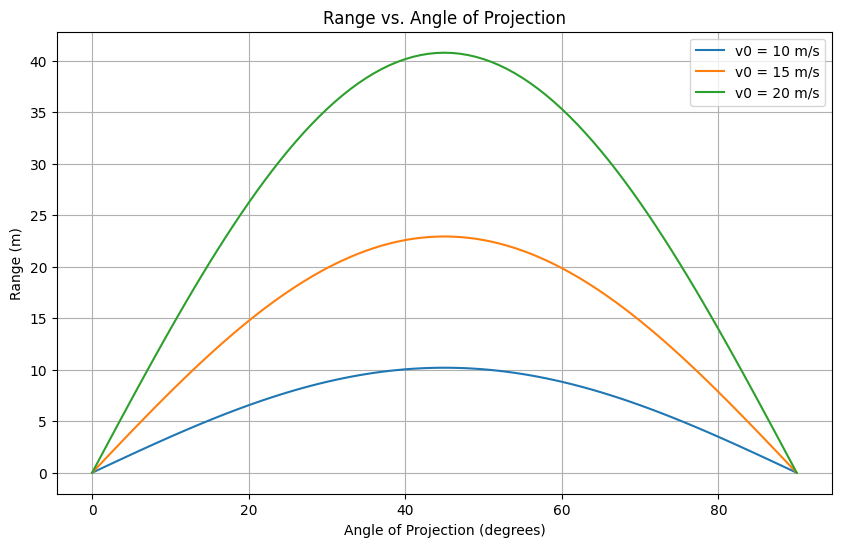

Problem 1
1. Theoretical Foundation
Projectile motion is governed by Newton’s laws of motion under constant gravitational acceleration. Let’s derive the equations step-by-step.
Governing Equations
Assume a projectile is launched with initial velocity $ v_0 $ at an angle $ \theta $ from the horizontal, with no air resistance and constant gravitational acceleration $ g $. The initial conditions are: - Horizontal velocity: $ v_{x0} = v_0 \cos\theta $ - Vertical velocity: $ v_{y0} = v_0 \sin\theta $
The acceleration is: - $ a_x = 0 $ (no horizontal acceleration) - $ a_y = -g $ (downward gravitational acceleration)
The position as a function of time $ t $ is found by integrating the accelerations: - Horizontal: $ x(t) = v_{x0} t = v_0 \cos\theta \, t $ - Vertical: $ y(t) = v_{y0} t - \frac{1}{2} g t^2 = v_0 \sin\theta \, t - \frac{1}{2} g t^2 $
Time of Flight
The projectile hits the ground when $ y(t) = 0 $ (assuming launch height is zero): $$ v_0 \sin\theta \, t - \frac{1}{2} g t^2 = 0 $$ Factorizing: $$ t (v_0 \sin\theta - \frac{1}{2} g t) = 0 $$ Solutions: $t = 0 $ (start) or $ t = \frac{2 v_0 \sin\theta}{g} $ (time of flight).
Range
The horizontal range $ R $ is the distance traveled when $ t = \frac{2 v_0 \sin\theta}{g} $: $$ R = v_0 \cos\theta \cdot \frac{2 v_0 \sin\theta}{g} = \frac{2 v_0^2 \sin\theta \cos\theta}{g} $$ Using the identity $ \sin 2\theta = 2 \sin\theta \cos\theta $: $$ R = \frac{v_0^2 \sin 2\theta}{g} $$ This is the general form of the range, showing dependence on $ \theta $, $ v_0 $, and $g $.
Family of Solutions
The equation $ R = \frac{v_0^2 \sin 2\theta}{g} $ represents a family of solutions parameterized by $ v_0 $ and $ g $. Different initial conditions yield distinct ranges and trajectories.
2. Analysis of the Range
The range depends on $ \sin 2\theta $, which has a maximum value of 1 when $ 2\theta = 90^\circ $, or $ \theta = 45^\circ $. Thus, the maximum range is: $$ R_{\text{max}} = \frac{v_0^2}{g} \quad \text{at} \quad \theta = 45^\circ $$
- Initial Velocity ($ v_0 $): Range scales with $v_0^2 $, so doubling $ v_0 $ quadruples $ R $.
- Gravitational Acceleration ($ g $): Range is inversely proportional to $ g \(. On the Moon (\) g \approx 1.62 \, \text{m/s}^2 \(), the range is greater than on Earth (\) g = 9.81 \, \text{m/s}^2 $).
- Angle ($ \theta $): $ R $ is symmetric about $ 45^\circ $ (e.g., $ \theta = 30^\circ $ and $ 60^\circ $ yield the same range).
3. Practical Applications
- Sports: A soccer ball’s trajectory depends on kick angle and speed, optimized near $ 45^\circ $ for distance.
- Engineering: Artillery and rocket launches adjust $ \theta $ and $ v_0 $ for target range.
- Astrophysics: Trajectories on other planets (e.g., Mars, $ g = 3.72 \, \text{m/s}^2 $) require adjusted models.
- Uneven Terrain: Non-zero launch height modifies the time of flight and range (requires quadratic solving).
- Air Resistance: Introduces damping, reducing range and altering optimal $ \theta $.
4. Implementation
Below is a Python script simulating projectile motion, plotting range vs. angle, and animating a trajectory.
Python Code
import numpy as np
import matplotlib.pyplot as plt
from matplotlib.animation import FuncAnimation
from IPython.display import HTML
# Constants
g = 9.81 # m/s^2 (Earth gravity)
v0_values = [10, 15, 20] # Initial velocities (m/s)
# Range function
def range_theta(theta, v0, g):
return (v0**2 * np.sin(2 * np.radians(theta))) / g
# Trajectory function
def trajectory(t, v0, theta, g):
x = v0 * np.cos(np.radians(theta)) * t
y = v0 * np.sin(np.radians(theta)) * t - 0.5 * g * t**2
return x, y
# Part 1: Range vs Angle Plot
theta = np.linspace(0, 90, 91) # Angles from 0 to 90 degrees
plt.figure(figsize=(10, 6))
for v0 in v0_values:
R = range_theta(theta, v0, g)
plt.plot(theta, R, label=f'v0 = {v0} m/s')
plt.xlabel('Angle of Projection (degrees)')
plt.ylabel('Range (m)')
plt.title('Range vs. Angle of Projection')
plt.legend()
plt.grid(True)
plt.show()
# Part 2: Animation of Trajectory (for v0 = 15 m/s, theta = 45°)
v0_anim = 15
theta_anim = 45
t_flight = 2 * v0_anim * np.sin(np.radians(theta_anim)) / g
t = np.linspace(0, t_flight, 100)
x, y = trajectory(t, v0_anim, theta_anim, g)
fig, ax = plt.subplots(figsize=(10, 6))
ax.set_xlim(0, max(x) * 1.1)
ax.set_ylim(0, max(y) * 1.1)
ax.set_xlabel('Distance (m)')
ax.set_ylabel('Height (m)')
ax.set_title(f'Projectile Trajectory (v0 = {v0_anim} m/s, θ = {theta_anim}°)')
ax.grid(True)
line, = ax.plot([], [], 'b-', lw=2)
point, = ax.plot([], [], 'ro')
def init():
line.set_data([], [])
point.set_data([], [])RR
return line, point
def animate(i):
line.set_data(x[:i], y[:i])
point.set_data([x[i]], [y[i]])
return line, point
anim = FuncAnimation(fig, animate, init_func=init, frames=len(t), interval=50, blit=True)
plt.close() # Prevents duplicate static plot
HTML(anim.to_jshtml()) # Displays animation in Jupyter; save as GIF in VS Code if needed

Graphical Outputs
- Range vs. Angle: The plot shows $ R $vs. \(\theta\) for $ v_0 = 10, 15, 20 \, \text{m/s} $, peaking at $ 45^\circ $.
- Animation: A trajectory for $ v_0 = 15 \, \text{m/s} $ , $ \theta = 45^\circ $, showing the parabolic path.
Discussion of Limitations
- Idealized Model: Assumes no air resistance, flat terrain, and constant $ g $.
- Realistic Factors:
- Drag: Reduces range; optimal $ \theta $ shifts below $ 45^\circ $.
- Wind: Alters trajectory unpredictably.
- Height: Non-zero launch height requires solving a quadratic for time of flight.
- Suggestions: Use numerical methods (e.g., Runge-Kutta) to include drag ($ F_d = -k v^2 $) or wind forces.
Conclusion
This analysis reveals the elegance of projectile motion’s dependence on $ \theta $, $ v_0 $, and $ g $, while highlighting its adaptability to real-world scenarios. The computational tools provide visual insights, making it a powerful teaching and engineering tool.